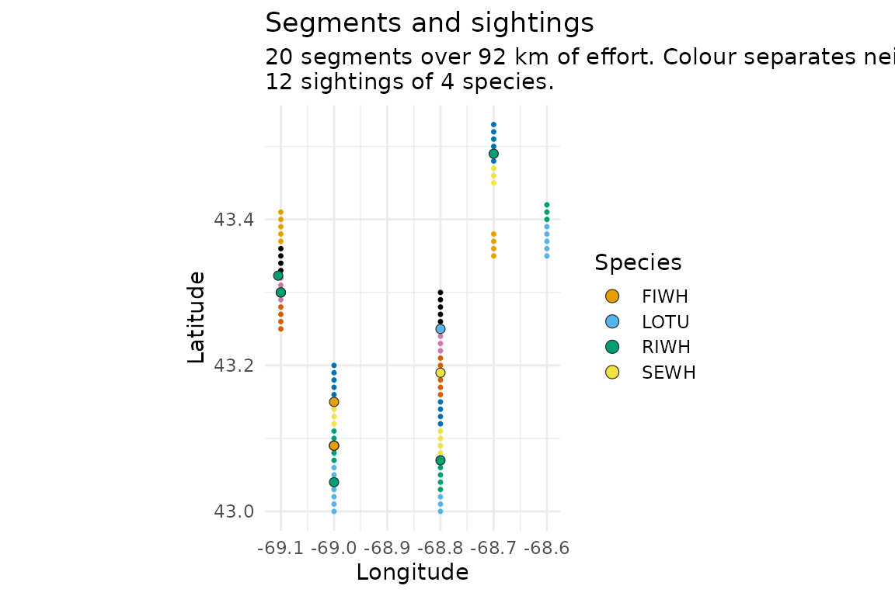
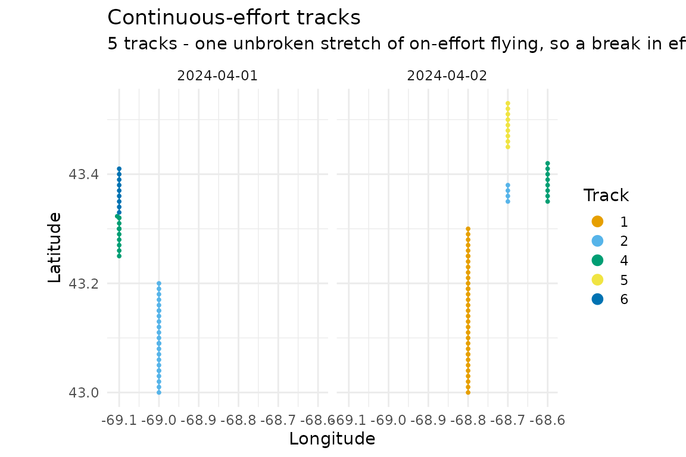
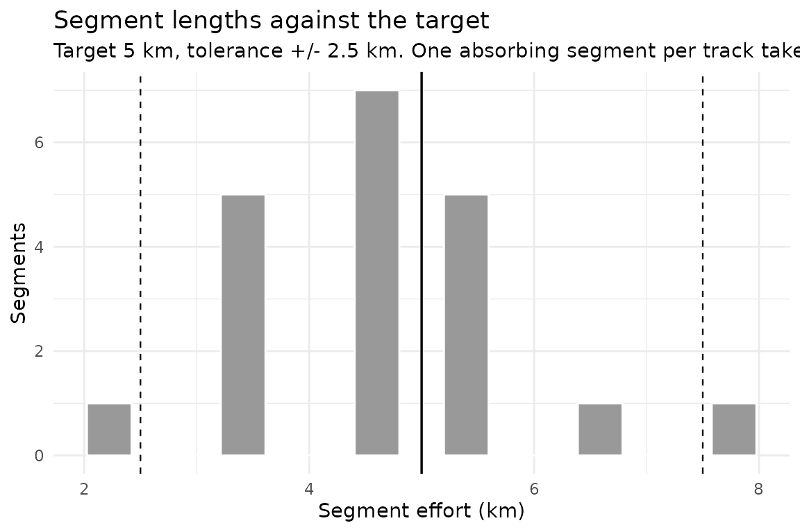
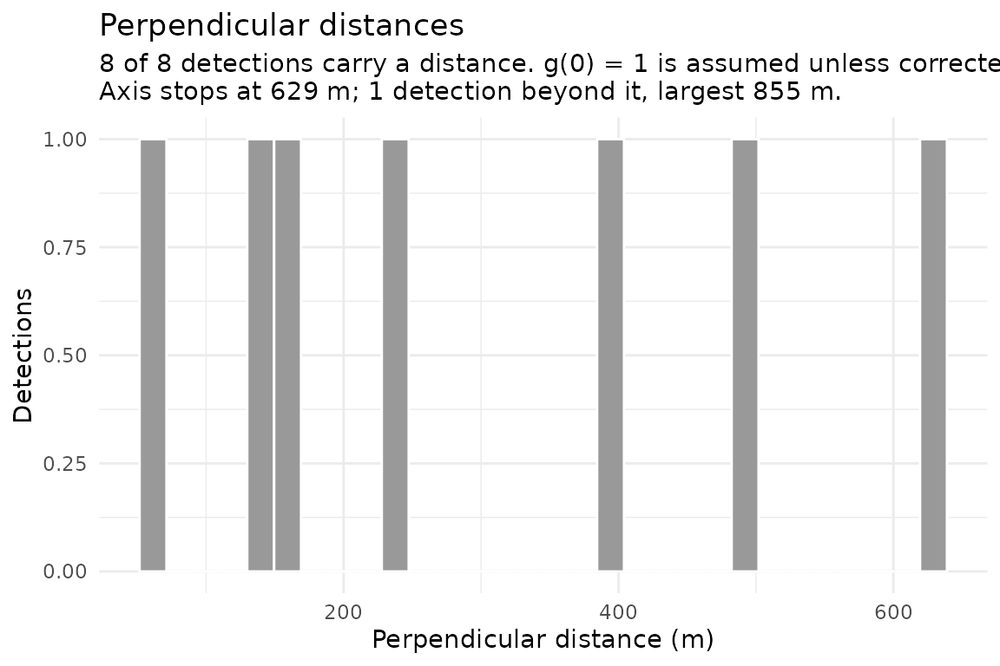
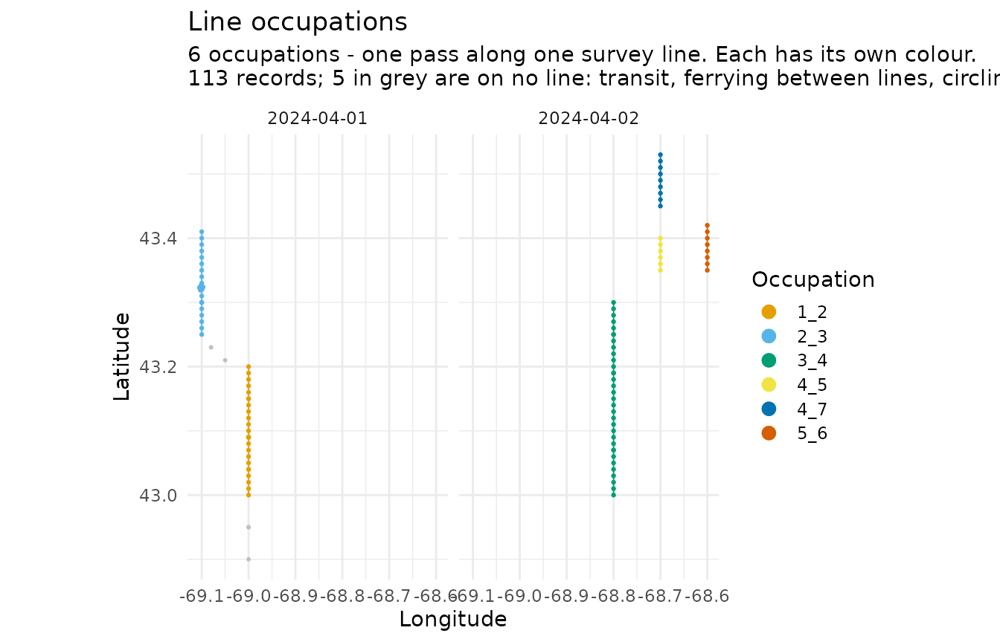
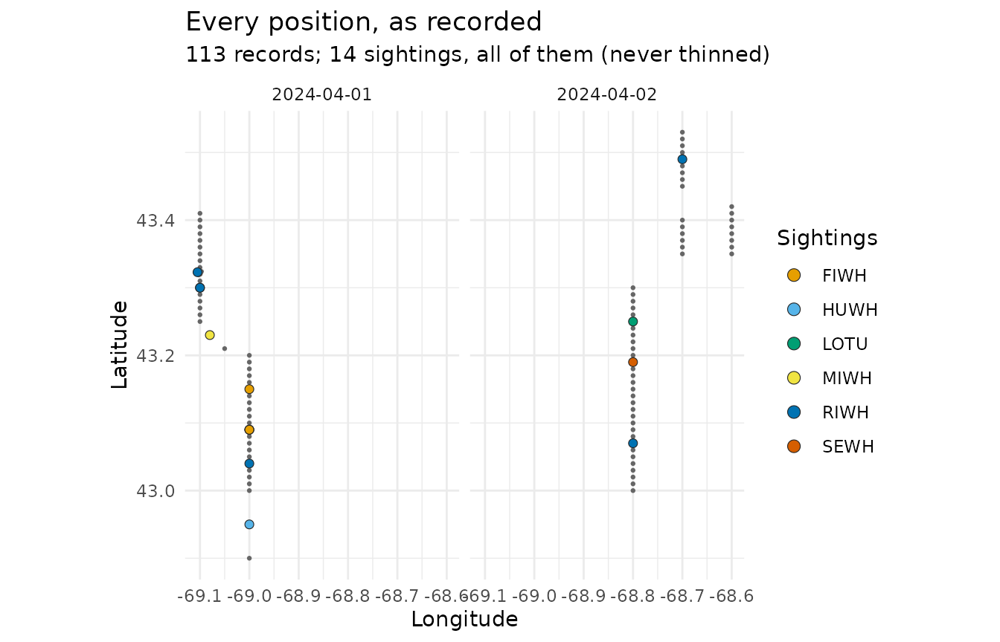

Segmenting NARWC line-transect data
Source:vignettes/segmenting-narwc-data.Rmd
segmenting-narwc-data.RmdWhat this package does
Density surface modelling needs survey effort chopped into short, roughly equal pieces — segments — each with a location, an amount of effort, and a count of what was seen along it. This package takes aerial line-transect survey data in the format of the North Atlantic Right Whale Consortium (NARWC) sightings database and produces exactly that.
The input contract is the NARWC format described in Kenney (2023),
The North Atlantic Right Whale Consortium Database: A Guide for
Users and Contributors, Version 8. The output is a segment table
you can hand to Distance or dsm.
Reading data
read_narwc() standardises column names and types. It
accepts the handbook’s canonical
LAT_DD/LONG_DD as well as the
LATITUDE/LONGITUDE spelling used in the
extracts the database manager distributes.
path <- system.file("extdata", "narwc-example.csv", package = "distsamp")
dat <- read_narwc(path)
#> `read_narwc()` renamed 2 columns:
#> LAT_DD -> LATITUDE
#> LONG_DD -> LONGITUDE
#> All matched an exact entry in the alias table; `narwc_column_mapping()` returns this, and `quiet = TRUE` silences it.
dim(dat)
#> [1] 113 30
head(dat[, c("FILEID", "EVENTNO", "TIME", "LATITUDE", "LEGTYPE", "LEGSTAGE", "SPECCODE")])
#> # A tibble: 6 × 7
#> FILEID EVENTNO TIME LATITUDE LEGTYPE LEGSTAGE SPECCODE
#> <chr> <dbl> <dbl> <dbl> <dbl> <dbl> <chr>
#> 1 AA240401 1 120000 42.9 1 NA NA
#> 2 AA240401 2 120200 43.0 1 NA NA
#> 3 AA240401 3 120200 43.0 1 NA HUWH
#> 4 AA240401 4 120400 43 2 1 NA
#> 5 AA240401 5 120425 43.0 2 2 NA
#> 6 AA240401 6 120450 43.0 2 2 NAEverything in this vignette runs on mock data.
narwc-example.csv is a synthetic two-day survey generated
by data-raw/make-fixture.R, built to mirror the
hypothetical survey in Figure 2 of the handbook: transits, survey lines,
sightings sharing an event number, a pilot sighting, a cross-leg, a
break-off to circle, and a line abandoned and re-flown later in the day.
The positions, dates, and animals are invented — the geometry is
deliberately simple, with every line running due north along a constant
meridian in 0.01-degree steps, so that expected distances can be checked
by hand.
No real NARWC records are distributed with this package, and none have been used to develop it. Treat every figure here as illustrating the mechanics, never as a result. Real data must be requested from the NARWC, and validating this package against a real extract is still an open item.
Data that is not quite handbook shape
Two things real extracts do that the bundled fixture does not.
Columns from a particular survey programme
Survey programmes add their own derived columns.
read_narwc() keeps the handbook columns and drops the rest
— but it tells you what it dropped, rather than discarding it
silently:
ccs <- read.csv(path)
ccs$Tr_SIGHTING <- 1
ccs$IS_LAT <- ccs$LAT_DD
ccs$IS_LONG <- ccs$LONG_DD
kept <- read_narwc(ccs)
#> `read_narwc()` renamed 2 columns:
#> LAT_DD -> LATITUDE
#> LONG_DD -> LONGITUDE
#> All matched an exact entry in the alias table; `narwc_column_mapping()` returns this, and `quiet = TRUE` silences it.
#> `read_narwc()` dropped 3 columns not in the NARWC handbook schema:
#> IS_LAT, IS_LONG, Tr_SIGHTING
#> 3 of these are declared by the "ccs" profile (Center for Coastal Studies, Cape Cod Bay).
#> Keep them with `profile = "ccs"`; see `narwc_profiles()`.narwc_profiles() records what is known about those
columns, per programme, including how confident that knowledge is:
narwc_profiles("ccs")[, c("column", "role", "confidence")]
#> # A tibble: 8 × 3
#> column role confidence
#> <chr> <chr> <chr>
#> 1 IS_LAT passthrough confirmed
#> 2 IS_LONG passthrough confirmed
#> 3 IS_SPECCODE passthrough unconfirmed
#> 4 Tr_SIGHTING passthrough confirmed
#> 5 OBSSIGHT passthrough unconfirmed
#> 6 Effort_Type passthrough unconfirmed
#> 7 Date_UTC passthrough unconfirmed
#> 8 Time_UTC passthrough unconfirmedNaming the profile keeps them:
names(read_narwc(ccs, profile = "ccs"))[10:14]
#> `read_narwc()` renamed 2 columns:
#> LAT_DD -> LATITUDE
#> LONG_DD -> LONGITUDE
#> All matched an exact entry in the alias table; `narwc_column_mapping()` returns this, and `quiet = TRUE` silences it.
#> [1] "LEGSTAGE" "LEGNO" "ALT" "BEAUFORT" "VISIBLTY"Keeping is not interpreting. A profile is never applied because a
column name matched, and distsamp does nothing with these
columns beyond carrying them: Tr_SIGHTING means “sighting
made from the track-line” in a CCS file, and there is nothing stopping
another programme using that name for something else. A column name is
not a contract between programmes.
Blank rows where a value has not changed
NARWC often records a value once and leaves it blank until it changes
— LEGTYPE is entered at the start of a census line and the
rows beneath are empty until the leg type changes.
fill_narwc() carries that state forward:
gappy <- data.frame(
FILEID = "A", DATE = as.Date("2024-04-01"), EVENTNO = 1:6,
LEGTYPE = c(2, NA, NA, NA, 1, NA),
BEAUFORT = c(2, NA, NA, 4, NA, NA)
)
fill_narwc(gappy)
#> `fill_narwc()` filled 8 values, grouped by FILEID, DATE.
#> carried forward: 8
#> LEGTYPE 4, BEAUFORT 4
#> # A tibble: 6 × 5
#> FILEID DATE EVENTNO LEGTYPE BEAUFORT
#> <chr> <date> <int> <dbl> <dbl>
#> 1 A 2024-04-01 1 2 2
#> 2 A 2024-04-01 2 2 2
#> 3 A 2024-04-01 3 2 2
#> 4 A 2024-04-01 4 2 4
#> 5 A 2024-04-01 5 1 4
#> 6 A 2024-04-01 6 1 4Three things it does that a bare tidyr::fill() does
not.
It groups by file and day. Ungrouped, a sea state from the last record of one survey day carries into the next, and a leg number crosses into a different survey entirely. A filled value is indistinguishable from a recorded one afterwards, so this is not a mistake you can find later.
It refuses to fill sighting columns. Carrying
SPECCODE and NUMBER forward would replicate
one group of three right whales onto every row until the next
sighting:
fill_narwc(gappy, columns = "NUMBER")
#> Error in `fill_narwc()`:
#> ! These columns must not be carried forward: `NUMBER`.
#> They are per-record measurements, not survey state. Filling a sighting column replicates one detection onto every row beneath it; filling a position or time fabricates a measurement. See `?narwc_fill_columns`.It separates recovery from inference.
"downup" fills down and then up, so its backward fills are
the values before the first record of a group — state that was never
logged. Those are counted separately in the report, because only the
forward fills recover something that was there.
One caution. Filling LEGSTAGE is the least safe of the
defaults: if a file records 1 (begin line) and leaves the
continuation rows blank, filling down marks the whole line “begin line”
rather than 2 (continue) — and since on-effort eligibility
is LEGSTAGE == 2, that line drops out of every distance
calculation. Check the per-column counts against what you expect.
Checking data
validate_narwc() reports problems rather than raising
them, so you can decide what matters. It never modifies the data.
validate_narwc(dat)
#> # A tibble: 1 × 6
#> check severity column n rows message
#> <chr> <chr> <chr> <int> <list> <chr>
#> 1 legstage_line_not_closed note LEGSTAGE 1 <int [1]> A line occupation …One note, and it is the right one: the fixture contains a survey line abandoned when the sea state rose, so that line has no end-line record. A line legitimately ends without one when it is abandoned or re-flown later, which is why this is a note rather than a warning — but on a line that was flown to completion, a missing end-line means the record is incomplete.
Nothing above a note here. On real data you will typically see codes
outside the handbook’s code book, sightings recorded at line-boundary
events, LEGSTAGE sequences that do not close, and gaps in
required fields. Each finding names the rows involved:
broken <- dat
broken$LEGTYPE[1] <- 8 # not a NARWC LEGTYPE
broken$LONGITUDE <- abs(broken$LONGITUDE) # sign convention lost
issues <- validate_narwc(broken)
issues[, c("check", "severity", "column", "n")]
#> # A tibble: 4 × 4
#> check severity column n
#> <chr> <chr> <chr> <int>
#> 1 unknown_code warning LEGTYPE 1
#> 2 legstage_line_not_closed note LEGSTAGE 1
#> 3 positive_west_longitude warning LONGITUDE 113
#> 4 exact_position_far_from_event warning S_LAT/S_LONG 4
issues$message[1]
#> [1] "`LEGTYPE` contains values outside the handbook code book (permitted: 0, 1, 2, 3, 4, 5, 6, 7, 9)."Segmenting
segment_survey() runs the whole pipeline.
segs <- segment_survey(dat, seg_length = 5, seed = 1)
segs
#> <distsamp_segments>
#> segments: 20
#> tracks: 7
#> total effort: 92.23 km
#> segment length: median 4.44 km, range 2.22-7.78 km
#> target length: 5 km seed: 1
#> species: FIWH, RIWH, SEWH
#> detections: 8 (8 with a perpendicular distance, m)The segments table has one row per segment:
head(segs$segments[, c("seg_id", "LEGNO3", "seg_eff", "mid_lat", "mid_lon", "wt_beaufort")])
#> # A tibble: 6 × 6
#> seg_id LEGNO3 seg_eff mid_lat mid_lon wt_beaufort
#> <chr> <chr> <dbl> <dbl> <dbl> <dbl>
#> 1 2024-04-01_2_1 1_2 7.78 43.0 -69 2
#> 2 2024-04-01_2_2 1_2 5.56 43.1 -69 2
#> 3 2024-04-01_2_3 1_2 3.33 43.1 -69 2
#> 4 2024-04-01_2_4 1_2 5.56 43.2 -69 2
#> 5 2024-04-01_4_1 2_3 4.44 43.3 -69.1 2
#> 6 2024-04-01_4_2 2_3 3.33 43.3 -69.1 2seg_eff is the segment’s realised length in km.
mid_lat/mid_lon are the point half of the
segment’s effort along the track — the location to use for a covariate
lookup. wt_beaufort is the mean sea state weighted by the
distance each record covers, which is the right form for a detection
covariate.
Counts arrive separately, one row per segment per species:
head(segs$sightings)
#> # A tibble: 6 × 4
#> seg_id SPECCODE n_sightings n_animals
#> <chr> <chr> <int> <dbl>
#> 1 2024-04-01_2_1 RIWH 1 1
#> 2 2024-04-01_2_2 FIWH 1 3
#> 3 2024-04-01_2_2 RIWH 2 3
#> 4 2024-04-01_4_2 RIWH 2 5
#> 5 2024-04-02_1_3 RIWH 1 4
#> 6 2024-04-02_1_5 SEWH 1 2For a density surface model you usually want them spread across columns:
wide <- segments_wide(segs)
head(wide[, c("seg_id", "seg_eff", "mid_lat", "mid_lon", "n_RIWH", "n_FIWH")])
#> # A tibble: 6 × 6
#> seg_id seg_eff mid_lat mid_lon n_RIWH n_FIWH
#> <chr> <dbl> <dbl> <dbl> <dbl> <dbl>
#> 1 2024-04-01_2_1 7.78 43.0 -69 1 0
#> 2 2024-04-01_2_2 5.56 43.1 -69 3 3
#> 3 2024-04-01_2_3 3.33 43.1 -69 0 0
#> 4 2024-04-01_2_4 5.56 43.2 -69 0 0
#> 5 2024-04-01_4_1 4.44 43.3 -69.1 0 0
#> 6 2024-04-01_4_2 3.33 43.3 -69.1 5 0Reproducibility
Segmentation makes two random choices: which segment absorbs a
track’s leftover distance, and whether a segment that cannot land
exactly on its target runs a little long or a little short. Pass a
seed and a run repeats exactly.
a <- segment_survey(dat, seg_length = 5, seed = 1)
b <- segment_survey(dat, seg_length = 5, seed = 1)
identical(a$segments, b$segments)
#> [1] TRUE
c <- segment_survey(dat, seg_length = 5, seed = 2)
identical(a$segments$seg_eff, c$segments$seg_eff)
#> [1] FALSEYour session’s own random stream is never disturbed.
Choosing a distance method
dist_methods()
#> # A tibble: 3 × 3
#> method aliases description
#> <chr> <chr> <chr>
#> 1 haversine "" Haversine on a 111.12 km/degree sphere; stable at short ran…
#> 2 becker "eab" Becker's segchopr fn.grcirclkm: spherical law of cosines, 6…
#> 3 kenney "rdk" Kenney and Winn (1986): spherical law of cosines, 111.12 km…Becker’s segchopr routine and Kenney and Winn (1986) are
the same formula — the spherical law of cosines, scaled by 111.12 km per
degree — so choosing between them does not change your results:
gc_distance(43, -69, 44, -70, method = "becker") ==
gc_distance(43, -69, 44, -70, method = "kenney")
#> [1] TRUEBoth names are kept so that existing scripts read sensibly and so you
can record which lineage you meant to follow. The default is
"haversine", which is the same sphere but numerically
stable at the short ranges between consecutive survey records, where the
law of cosines loses precision.
segment_survey(dat, seg_length = 5, seed = 1, dist_method = "becker")$settings$dist_method
#> [1] "becker"What counts as effort
flag_effort() decides which records are on effort. The
defaults follow the CETAP standard: on a survey line
(LEGTYPE == 2), Beaufort at most 3, below 1,200 ft, and
visibility at least 2 nautical miles.
table(flag_effort(dat)$OnOff.Effort)
#>
#> 0 1
#> 12 101
table(flag_effort(dat, max_beaufort = 1)$OnOff.Effort)
#>
#> 0
#> 113Visibility deserves a note. VISIBLTY carries two
encodings in one column: since 2004 an actual distance in nautical
miles, and before that a code folded into the same field as a negative
number. -1 means clear for at least 2 nautical
miles — good conditions — so a plain VISIBLTY >= 2
test throws away every legacy record.
visibility_ok(c(5, 1.5, -1, -2))
#> [1] TRUE FALSE TRUE FALSEWhat counts as a sighting
Only detections that arose from standard search effort belong in a
density estimate. By default the package excludes sightings by anyone
other than an on-duty observer (LEGSTAGE == 6), sightings
found afterwards in a vertical photograph (LEGSTAGE == 7),
and identifications that are merely possible or unrecorded
(IDREL of 1 or 9).
strict <- segment_survey(dat, seg_length = 5, seed = 1)
loose <- segment_survey(
dat, seg_length = 5, seed = 1,
sighting_args = list(legstage_exclude = numeric(0), idrel_keep = 1:3)
)
sum(strict$sightings$n_sightings)
#> [1] 8
sum(loose$sightings$n_sightings)
#> [1] 11A group sighted from the track and then circled for photographs has its position recorded off effort. Those detections are attached back to the segment they came from, following the CETAP rule that only further groups of the same species count with the original:
sapply(c("none", "same_species", "all"), function(m) {
s <- segment_survey(dat, seg_length = 5, seed = 1, circling = m)
sum(s$sightings$n_animals[s$sightings$SPECCODE == "RIWH"])
})
#> none same_species all
#> 12 13 13Perpendicular distances
Surveys that record the ANGLEL/ANGLER
declination angles get perpendicular distances computed automatically,
and a detections table in the shape a detection function
wants.
head(segs$detections)
#> # A tibble: 6 × 13
#> seg_id DATE SPECCODE size distance distbegin distend side
#> <chr> <date> <chr> <dbl> <dbl> <dbl> <dbl> <chr>
#> 1 2024-04-01_2_1 2024-04-01 RIWH 1 229 NA NA right
#> 2 2024-04-01_2_2 2024-04-01 RIWH 2 132. NA NA left
#> 3 2024-04-01_2_2 2024-04-01 RIWH 1 397. NA NA right
#> 4 2024-04-01_2_2 2024-04-01 FIWH 3 629. NA NA right
#> 5 2024-04-01_4_2 2024-04-01 RIWH 4 61.4 NA NA left
#> 6 2024-04-01_4_2 2024-04-01 RIWH 1 855. NA NA right
#> # ℹ 5 more variables: distance_source <chr>, EVENTNO <dbl>, SIGHTNO <dbl>,
#> # circling <int>, break_off_distance <dbl>The geometry is handbook 8.A.2: the angle is measured below the
horizon at the moment the sighting is abeam, so the distance is
ALT / tan(angle).
# 45 degrees below the horizon at 229 m puts the animal 229 m off the track
perp_distance(45, altitude = 229)
#> [1] 229
perp_distance(c(75, 60, 45, 30, 15), altitude = 229)
#> [1] 61.36037 132.21321 229.00000 396.63963 854.63963These replaced STRIP in 2022: survey altitudes had to
rise once offshore wind turbines were in place, and STRIP’s
fixed distance intervals shift with altitude while an angle does
not.
The other three sources
Angles only exist from 2022. The archive records right-angle distance three other ways, and each has its own function.
STRIP, before 2022. An
interval, not a point, read off calibrated markings on the
observation bubble. Handbook 8.A.31 defines two code books, and which
applies depends on the programme, the date, and the aircraft — so the
same code means different things:
strip_distance(c(5, 13), scheme = "cetap", units = "nmi")
#> # A tibble: 2 × 4
#> distbegin distend side scheme
#> <dbl> <dbl> <chr> <chr>
#> 1 0.125 0.25 left cetap
#> 2 1 2 left cetap
strip_distance(c(5, 13), scheme = "nlpsc", units = "nmi")
#> # A tibble: 2 × 4
#> distbegin distend side scheme
#> <dbl> <dbl> <chr> <chr>
#> 1 0.25 0.5 left nlpsc
#> 2 4 Inf left nlpscCode 13 is 1–2 nmi under CETAP and over 4 nmi under NLPSC. Reading a
code with the wrong book produces plausible distances that are wrong,
and nothing downstream would notice — so with
scheme = "auto" the book is chosen from the survey date,
and with neither a date nor a scheme it errors rather than guess.
narwc_strip_bins() prints either book in full.
Exact positions, where S_LAT/S_LONG
exist. The perpendicular distance can then be measured rather
than inferred. exact_distance() projects the sighting onto
the track-line:
prepped <- flag_effort(make_leg_id(dat))
ex <- exact_distance(prepped)
subset(cbind(prepped["SPECCODE"], ex), !is.na(distance))
#> SPECCODE distance along side bearing
#> 9 RIWH 229.0000 0 right 0
#> 15 RIWH 132.2132 300 left 0
#> 65 RIWH 160.3475 0 left 0along is the point of that table. It is how far the
aircraft was from being abeam when the sighting was logged. Measuring
straight to the animal instead — which is what a naive implementation
does — gives sqrt(distance^2 + along^2), always too large
and never too small, which widens the fitted strip and biases density
down. The row with along of 300 m has a radial distance
more than twice its perpendicular one.
Sightings logged while circling. These are usually
real on-effort detections: the animal was seen from the track-line,
which is why the aircraft left it. circling_distance() ties
each back to the LEGSTAGE == 3 break-off record and
measures from there:
circ <- circling_distance(flag_circling(make_leg_id(dat)))
subset(circ, !is.na(distance))
#> # A tibble: 1 × 7
#> distance along side radial bearing anchor_event position_source
#> <dbl> <dbl> <chr> <dbl> <dbl> <dbl> <chr>
#> 1 250. -400. right 472. 0 39 exactradial is the straight-line distance from the break-off
point; distance is that projected onto the census line.
Treat these as a weaker source than the other three — the position is
fixed minutes after detection, by which time the animal has moved — and
exclude them from a detection function unless including them is a
deliberate, stated choice.
Two things to watch:
Units. ALT is in metres, so distances
are metres by default, but seg_eff is in kilometres.
Passing both to Distance::ds() without reconciling them
scales density by 1000. Use distance_units = "km", or
supply convert_units.
segment_survey(dat, seg_length = 5, seed = 1,
distance_units = "km")$detections$distance[1:3]
#> [1] 0.2290000 0.1322132 0.3966396Circling detections have no distance. They still count towards a segment’s abundance, but a position logged off the track is not a perpendicular distance and must not be fitted:
subset(segs$detections, circling == 1)
#> # A tibble: 0 × 13
#> # ℹ 13 variables: seg_id <chr>, DATE <date>, SPECCODE <chr>, size <dbl>,
#> # distance <dbl>, distbegin <dbl>, distend <dbl>, side <chr>,
#> # distance_source <chr>, EVENTNO <dbl>, SIGHTNO <dbl>, circling <int>,
#> # break_off_distance <dbl>Distances are restricted to on-effort census records by default, because handbook 8.A.31 notes that some teams record angles during transits and circling for practice — those must not enter a detection function.
Looking at the result
Four diagnostic views, each answering something the tables make hard
to see. They need ggplot2, and return ordinary
ggplot objects.
plot(segs)
The track flown in pale grey, the segment midpoints in dark grey, and the sightings coloured by species. A segmentation that has gone wrong is usually obvious here — midpoints strung along a line the aircraft never flew, or bunched where a track should have split.
Both of those channels are capped on purpose. Midpoints shrink as
they multiply, because 19,774 of them at a readable size cover the
survey area in solid black. And only the max_legend
most-seen species keep their own colour; the rest are gathered into one
“other” entry, so a survey with 36 species still has a legend you can
read. Nothing is dropped from the map — pass
species = "RIWH" to pull any one of them back out.
plot(segs, what = "tracks")
The same positions coloured by new_trackno. This is the
view that shows whether track splitting worked: a break in effort should
start a new colour, and a colour should never span two places the
aircraft could not have flown between. The fixture’s re-flown line is
the case to look at.
Past max_legend tracks the colours repeat and the legend
goes away — a 130-entry legend squeezes the map into a corner, and 130
colours cannot be told apart anyway. What the view is for still works:
neighbouring tracks differ.
plot(segs, what = "effort")
Segment lengths against the target, with the tolerance band dashed. A spread is expected — the Becker method gives each track one absorbing segment that takes the remainder — but mass outside the band is not.
plot(segs, what = "distances")
The detection-function diagnostic, worth looking at before
Distance::ds() is called. Look for a shoulder near zero and
a tail that falls away.
Two cautions on reading it. A dip in the first bin need not be a
sampling artefact: an aircraft cannot see the water directly beneath it,
and for the Skymaster the handbook says so outright — a reason to
truncate on the left, not to assume the animals were absent. And a
smooth curve is not evidence that g(0) = 1; animals
submerged when the aircraft passed leave no trace in this plot at
all.
The axis stops at the 99th percentile, and the subtitle says how many detections lie beyond it and how large the largest is. This matters more than it sounds: on one real archive a single distance of six thousand kilometres set the scale and put all 2,170 real distances in the first bin. A distance that large is not a wide detection, it is a broken one, and the subtitle now says so outright rather than letting it quietly own the axis. Nothing is removed from the data — only from the view.
For a real map with coastlines, hand the positions to sf
instead.
Looking at part of a survey
An archive spanning decades draws as a smear. Every plotting function
takes dates, years, and months,
which narrow together rather than adding up —
years = 2019, months = 8 is August 2019, not all of 2019
and every August.
plot_survey(air, "occupations", years = 2019, months = 8)
plot(segs, what = "tracks", dates = "2019-08-14")filter_days() is the same selection on its own, for when
the subset is wanted for something other than a plot. Asking for days
the data does not hold is an error that reports what the data actually
covers, rather than an empty map.
Spatial output
pts <- segments_as_sf(segs, "midpoints")
lines <- segments_as_sf(segs, "lines")
lines[1:3, c("seg_id", "seg_eff")]
#> Simple feature collection with 3 features and 2 fields
#> Geometry type: LINESTRING
#> Dimension: XY
#> Bounding box: xmin: -69 ymin: 43 xmax: -69 ymax: 43.15
#> Geodetic CRS: WGS 84
#> # A tibble: 3 × 3
#> seg_id seg_eff geometry
#> <chr> <dbl> <LINESTRING [°]>
#> 1 2024-04-01_2_1 7.78 (-69 43, -69 43.01, -69 43.02, -69 43.03, -69 43.04, -…
#> 2 2024-04-01_2_2 5.56 (-69 43.07, -69 43.08, -69 43.09, -69 43.09, -69 43.09…
#> 3 2024-04-01_2_3 3.33 (-69 43.12, -69 43.13, -69 43.14, -69 43.15)Cropping works on the whole result at once, keeping the tables consistent:
gom <- c(xmin = -69.05, xmax = -68.5, ymin = 42, ymax = 48)
nrow(crop_to_bbox(segs, gom)$segments)
#> [1] 16Writing results
Nothing in the package writes to disk unless you ask.
out <- file.path(tempdir(), "segments")
write_segments(segs, out)
list.files(out)
#> [1] "segments_detections.csv" "segments_points.csv"
#> [3] "segments_segments.csv" "segments_sightings.csv"
#> [5] "segments_tracks.csv"A real extract needs more than reading
The fixture is clean. A real NARWC extract is not, and the steps
between reading one and segmenting it have an order that is quiet when
you get it wrong. prepare_aerial() runs them:
air <- prepare_aerial(dat, quiet = TRUE)
c(records = nrow(air), on_effort = sum(air$OnOff.Effort == 1))
#> records on_effort
#> 113 101It builds line occupations, reconstructs the line state where the
file recorded it only at change points, classifies the platform by
speed, keeps the aerial records, and flags effort — in that order.
?prepare_aerial says which step depends on which. Two
examples of why the order is not cosmetic:
- Filtering out a vessel leg before occupations are built makes two occupations of one survey line adjacent, so they merge and the ferry between them is counted as survey effort. Measured on real data at 224.5 km where 4.4 km was correct.
-
LEGSTAGEis recorded when it changes, so most mid-line records carry none — and a right-angle distance needsLEGSTAGE == 2. On one archive that left 1,928 of 2,280 on-effort census sightings with no distance, for a code nobody wrote down.
Then look at what you have, before trusting any number from it:
plot_survey(air, "occupations", coastline = FALSE)
A survey line drawn in three pieces, or three drawn as one, is
visible here and invisible in a table. diagnose_pipeline()
is the same question as numbers, and
vignette("segmenting-narwc-data") aside, the traps a real
extract springs are catalogued in
docs/08-onboarding-a-real-extract.md.
When a view refuses to draw because the column it colours by is not
there yet, "positions" still will. It needs
LATITUDE and LONGITUDE and nothing else, which
makes it the one to reach for on a file that has been through none of
this — or one whose columns are not what you were told they were.
plot_survey(air, "positions", sightings = TRUE, coastline = FALSE)
With sightings = TRUE it is the whole survey in one map:
where the aircraft went, and what was seen from it. The sightings are
taken before thinning and drawn as outlined markers on their own scale,
so they read on top of the effort rather than as more of it — a few
thousand sighting rows in three million would not survive
max_points otherwise.
Running the steps yourself
Every stage is exported, so you can intervene between them:
step <- dat |>
make_leg_id() |> # separate re-occupations of a line
flag_circling() |> # mark records taken while circling
flag_effort() |> # decide what is on effort
point_to_point_effort() |># great-circle distance along the track
split_tracks() # start a new track where effort breaks
tracks <- track_effort(step)
plan <- plan_segments(tracks, seg_length = 5, seed = 1)
head(plan)
#> # A tibble: 6 × 6
#> DATE new_trackno start_time track_effort seg_no tgtdist
#> <date> <chr> <dbl> <dbl> <int> <dbl>
#> 1 2024-04-01 2 120400 22.2 1 7.22
#> 2 2024-04-01 2 120400 22.2 2 5
#> 3 2024-04-01 2 120400 22.2 3 5
#> 4 2024-04-01 2 120400 22.2 4 5
#> 5 2024-04-01 4 123000 7.78 1 5
#> 6 2024-04-01 4 123000 7.78 2 2.78Citing this
The segmentation method is Becker et al. (2010). The package is the
implementation. Cite them separately, and record the seed —
without it the segmentation is not reproducible.
Note that the published methods state the target segment length and
that segments are cut from continuous effort, but do not describe what
happens to the leftover distance at the end of a track. The tolerance
test and the random choice of an absorbing segment come from Becker’s
segchopr code; ?plan_segments is the
documentation of record for them.
References
Becker, E.A., Forney, K.A., Ferguson, M.C., Foley, D.G., Smith, R.C., Barlow, J. and Redfern, J.V. (2010) Comparing California Current cetacean-habitat models developed using in situ and remotely sensed sea surface temperature data. Marine Ecology Progress Series 413:163-183. https://doi.org/10.3354/meps08696
Becker, E.A., Forney, K.A., Redfern, J.V., Barlow, J., Jacox, M.G., Roberts, J.J. and Palacios, D.M. (2019) Predicting cetacean abundance and distribution in a changing climate. Diversity and Distributions 25:626-643. https://doi.org/10.1111/ddi.12867
Hedley, S.L. and Buckland, S.T. (2004) Spatial models for line transect sampling. Journal of Agricultural, Biological, and Environmental Statistics 9:181-199. https://doi.org/10.1198/1085711043578
Miller, D.L., Burt, M.L., Rexstad, E.A. and Thomas, L. (2013) Spatial models for distance sampling data: recent developments and future directions. Methods in Ecology and Evolution 4:1001-1010. https://doi.org/10.1111/2041-210X.12105
Kenney, R.D. (2023) The North Atlantic Right Whale Consortium Database: A Guide for Users and Contributors, Version 8. NARWC Reference Document 2023-01.
Kenney, R.D. and Winn, H.E. (1986) Cetacean high-use habitats of the northeast United States continental shelf. Fishery Bulletin 84:345-357.